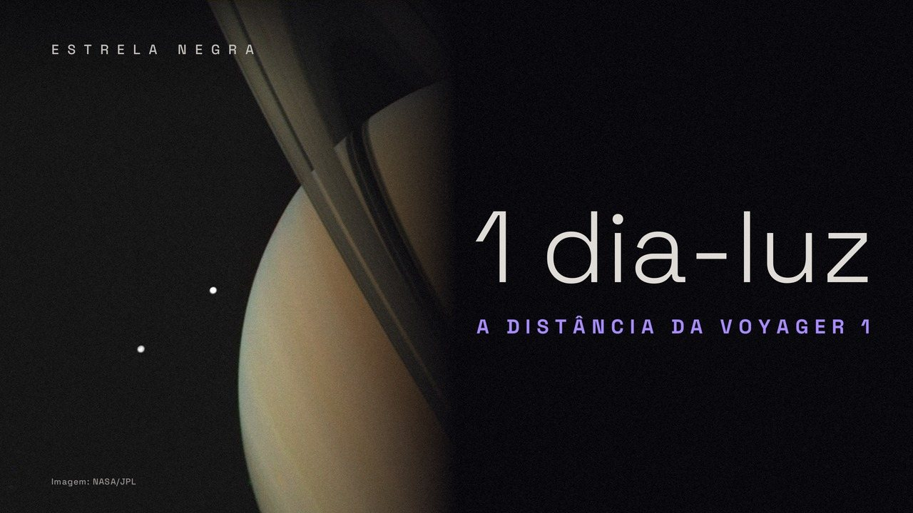
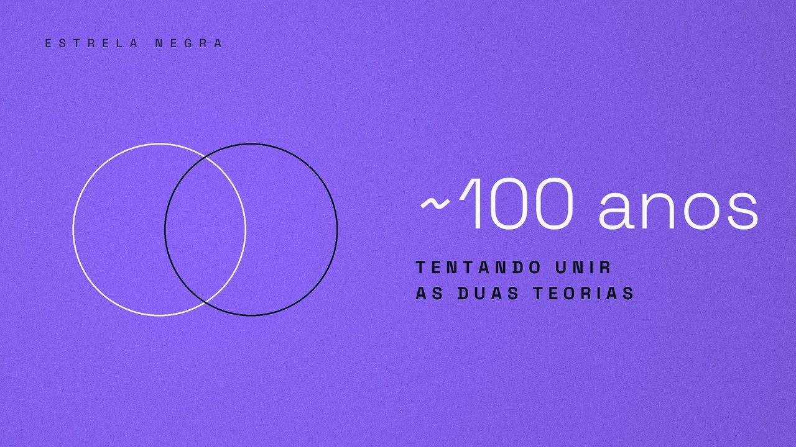

Lista de episódios
TodosBuracos negros e estrelasSistema SolarUniverso

A gente levou 8 anos pra chegar em Mercúrio. Por quê?
Sistema Solar · 5 fontes

Voyager 1: um dia-luz de casa (e o que é um ano-luz)
Sistema Solar · 7 fontes

O buraco negro que nasceu antes da galáxia: o que o James Webb mediu no QSO1
Buracos negros e estrelas · 7 fontes

Ondas gravitacionais: como o LIGO mediu algo 400 vezes menor que um próton
Universo · 8 fontes

3I/ATLAS: o cometa interestelar que pode ser mais velho que o Sol
Sistema Solar · 9 fontes

A física tem um problema de 100 anos (e talvez dê pra resolver em laboratório)
Universo · 5 fontes